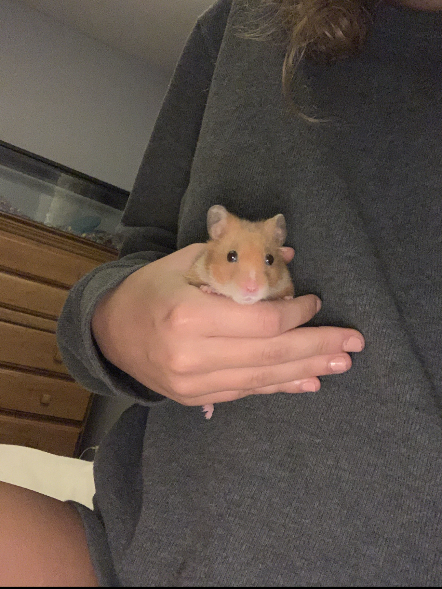
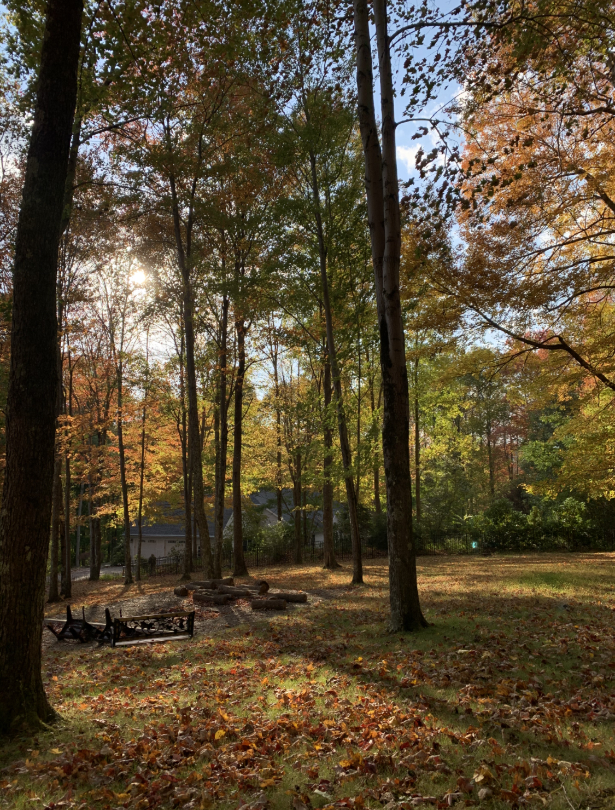
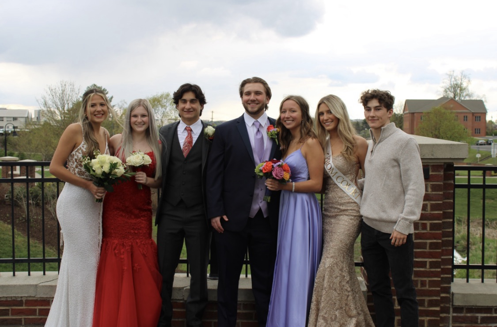

I was born on April 10, 2003. My favorite color is blue but I also relaly like purple. I have a hamster and a fish. My fish is named Boop and he is dying. In my free time I hang out with my friends. My favorite season is fall, although I really do love summer and I am so excited for it to come. I want a dog really badly. I went to prom last weekend. I used to dance, run cross country, play softball, and I was also a majorette in the band. I quit all of it but I enojoyed the time I had witht them. I am not as busy anymore and I need a job but I cannot find one!
 I have actually really enjoyed my senior year. COVID has unfortunately made me not care about anything anymore, including school, but it is also a good thing because I am not upset that I did not get to do normal senior schoool year things. My grades are still good too but actual school is the most pointless waste of my time this year. It has been the best year because I have just been having fun with my family and my friends, I have the best family and friends ever. I am so happy and having the time of my life. I love senior year! I like the majority of my classes too even though I do not have any friends in them. In a lot of them I just sit there though which is boring. In computer science I have made quite a few coding projects. I am not very good at coding but I try. I posted some of them below!

-I chose this project because I think it is really cute and I like the smile face I created and the color with it.
-I chose this project because I think it the bubbles are really fun and I enjoy playing around with this one and making them.
-I chose this project because this was one of the first ones I made and I was really proud of it. I also think it is fun and kind of like a game.